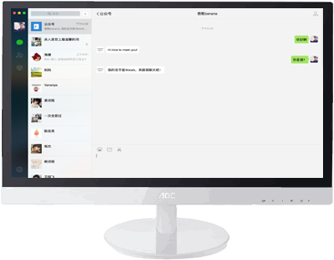
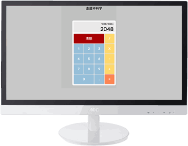

- 熟悉PHP的基本语法，会使用PHP进行面向对象的程序开发
- 熟悉MySQL，能够较为熟练地编写满足条件的SQL语句
- 有较好的编程习惯，能够写出可维护性较高的代码
- 能够熟练地使用Git、PHPStorm等开发工具
- 能够熟练地使用thinkPHP、CodeIgnter等后端框架
- 理解前端的工作流程，理解前端后端的交互
- 熟悉Ajax工作的原理和实现方法、了解HTTP协议
项目名称：PHP面向对象开发的mini博客
项目时间：2016/4 - 2016/4
- 项目描述：
-
- 面向博客访客：实现了文章的展示、文章搜索、文章列表分页展示等功能
- 文章展示功能：能够根据请求的文章id号码，实现数据库文章的检索和展示，同时能够有效过滤无效的请求 并反馈正确的引导（如跳转至404页面）
- 文章搜索功能：能够根据请求的关键字，搜索并数据库中与之相关的文章，并以搜索页面展示，同时能 够过有效滤无效的搜索请求并反馈正确的引导（如跳转至首页）
- 文章列表分页展示功能：实现了基于PHP+MySQL的分页功能，能够根据请求的页码数获取并显示文章列表，同时能 够有效的过滤无效的页码并反馈正确的引导（如当页码大于最大页则返回最大页码列表，若小于最小页码则 返回最小页码列表）
- 面向博客博主：实现了后台登陆、文章添加、文章修改、文章删除等功能
- 后台登陆：能够基于 session 和 cookie 技术实现后台登陆验证
- 文章添加：能够使用文章发布页面提交文章，并使之存放至数据库中
- 文章管理：能够在管理面板修改和删除已经存在的文章
- 责任描述：
-
- 简易博客的需求分析和可行性分析，各需求的业务逻辑的设计，数据表单的设计
- 项目的PHP代码实现，将设计转换为PHP代码
- 对博客进行黑盒和白盒的测试，包括业务逻辑安全性的测试等
- 使用迭代开发方法，在较短时间内完成了一个面向过程的PHP博客开发，然后以面向对象的方式对功能进行重写
- 独立完成前端页面的设计和代码实现

微信聊天机器人香蕉Banana
基于CodeIgniter实现的一个具有学习功能的的微信聊天机器人。搜索微信公众号：Banana_Jason 试试。

网页计算器（前端） www.leridy.pw/cal/re
基于Vue，实现的简单计算器。